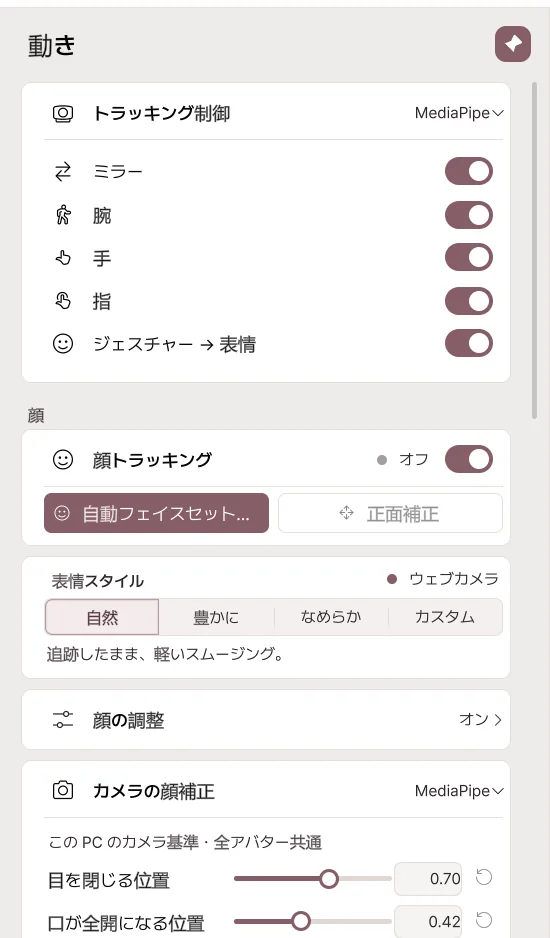
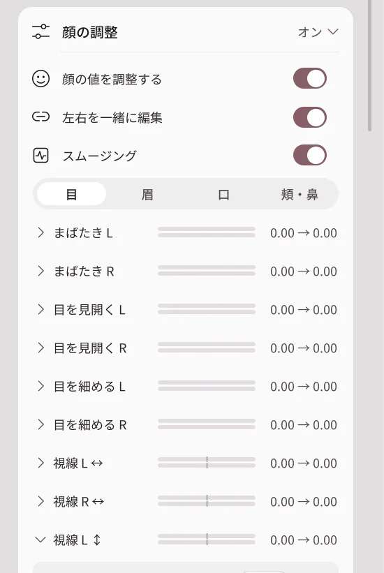
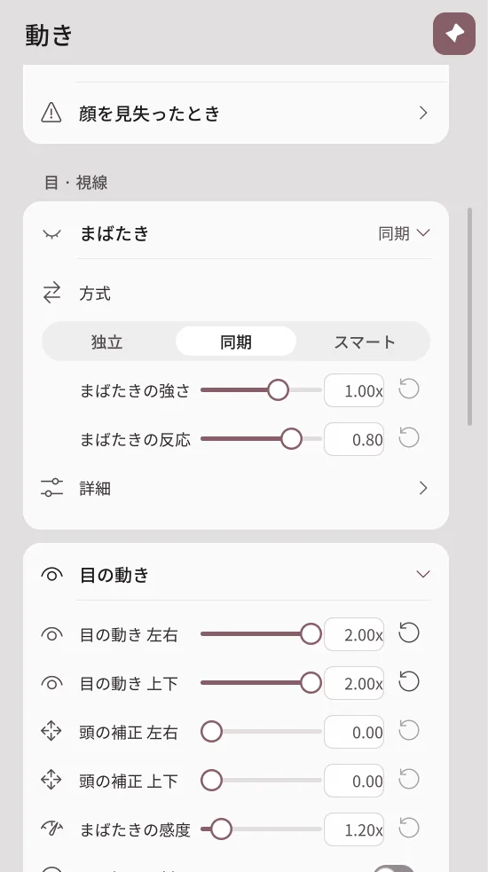
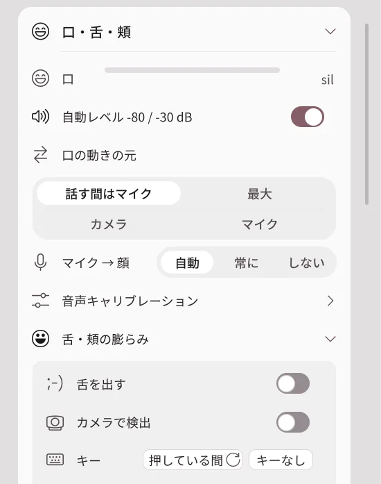
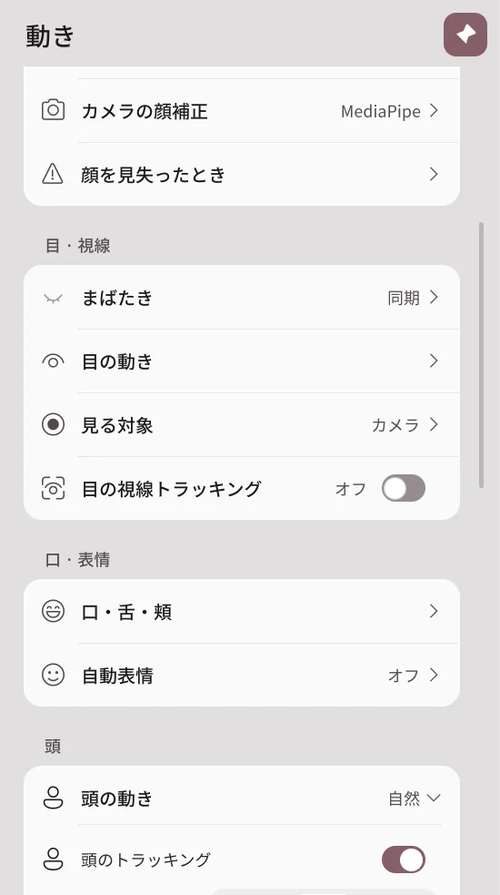

動作
自分の表情や動きがアバターにどれだけ大きく、どれだけ滑らかに反映されるかを決めます。設定はアバターごとに保存されます。
顔

| 項目 | 調整すると |
|---|---|
| 顔追跡 | オンにすると自分の表情が反映されます。オフにすると顔入力は使用されません。 |
| ミラー | 鏡のように左右の動きを反映します。 |
| ジェスチャー → 表情 | 手の形に関連するアバターの表情を使用します。 |
| 表情感度 | 高くすると小さな表情でも大きく、低くすると落ち着いて表示されます。 |
| 柔らかさ | 上げると揺れが減り、下げると素早く反応します。 |
自動顔設定

- 自動顔設定を押します。
- 案内に従って正面を向くか、表情を作ります。
- 測定を押して、次のステップに進みます。
- 最後に「適用」を押します。
顔の調整

- 目・眉・口・頬：それぞれの表情が動く大きさを個別に調整します。
- 左右両方を同時に編集: オンにすると両側を同じ値にします。
- スムージング: 小さな表情の揺れを減らします。高すぎると反応が遅くなります。
目と視線

| 項目 | 結果 |
|---|---|
| 点滅別 | 左目と右目を別々に閉じます。ウィンクに使います。 |
| 点滅同期 | 両目を一緒に閉じます。 |
| 自動まばたき | 入力がなくても一定間隔でまばたきをします。 |
| 目の視線追跡 | 私の瞳の方向を反映します。 |
| カメラビュー | アバターの瞳をカメラの方に向けます。 |
| 注視対象 | カメラ・特定のアバターなど、見る対象を選びます。 |
頭の追跡と顔の追跡、カメラの視点はそれぞれ別々に設定します。頭を固定した姿勢でも、瞳だけをカメラに向けさせることができます。
口とリップシンク

- リップシンクの強さ：上げると口をより大きく開きます。
- 自動レベル: 声の大きさに合わせて口の動きを調整します。
- 音声補正: 指示された母音を発音して自分の声に合わせます。
- 舌・頬の膨らみ: ボタンやショートカットキーでその表情を適用します。モデルに必要な表情がある場合に表示されます。
体

| 項目 | 調整すると |
|---|---|
| 頭の動き | 小さく・自然に・大きく の中で動きの大きさを選びます。 |
| 体の追従 | 頭を回すと体も一緒に回ります。 |
| 自然な動き | じっとしていても小さな待機動作を加えます。 |
| 呼吸 | 呼吸しているような小さな体の動きを加えます。 |
| 上半身・全身 | デバイスから受け取った体の動きを反映します。 |
トラッキングを失った場合

AFKは顔と体のトラッキングを両方失ったときに使用する待機状態です。メニュー → 基本・AFKポーズで時間を設定します。
| 時間 | 長くすると |
|---|---|
| 待機時間 | 少し入力が途切れても姿勢を維持してさらに待ちます。 |
| 切替時間 | 待機ポーズにゆっくり移行します。 |
| 復帰時間 | 入力が戻った後、正常な動作にゆっくり戻ります。 |
待機中に使用するポーズと表情は 基本ポーズと待機ポーズ で選びます。
腕と手

| 項目 | 調整すると |
|---|---|
| 腕・手の滑らかさ | 上げると手の震えが減り、速い手振りは遅れて追従します。 |
| 動的方式 | 手を伸ばす距離の変化を反映する腕の方式を使用します。 |
| 以前の方式 | 既存の腕の動き方式と比較できます。 |
| 手の深さ推定 | ウェブカメラで前後の距離を推定します。実験的で、腕がねじれる場合はオフにしてください。 |
| 手を見失った時の復帰 | 手が見えないときに基本姿勢に戻る速さを変えます。 |
デスク動作
手がカメラに映らないとき、キーボードやマウスの使用に合わせてアバターの手を動かします。
- 手の基本姿勢: デスクの高さ・手の間隔・手首の角度を合わせます。
- キーボード反応: タイピング時に指と手が動く大きさです。
- マウス反応: マウスを動かすときに手が追従する大きさです。
- 手を再びカメラに戻すとトラッキングに戻ります。
キーボード入力は手の動作を作るためだけに使用し、入力した文字は保存や送信を行いません。
表情が出ないとき
アバターにある表情だけが動かせます。VRCFaceTracking設定があればその設定を、ARKitシェイプキーがあればその顔の形を使用します。ない表情は感度を上げても新たに出現しません。